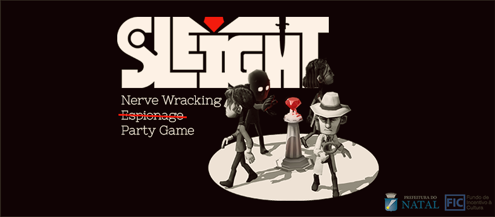
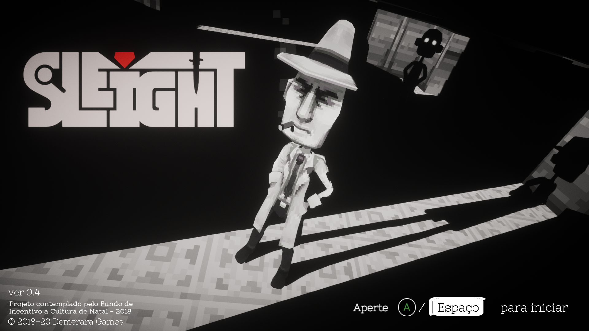
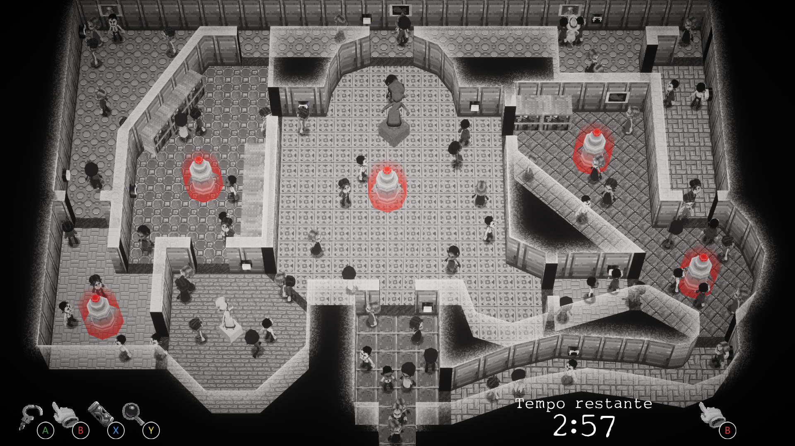
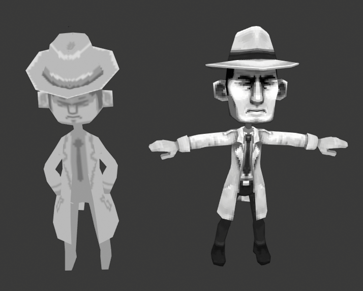
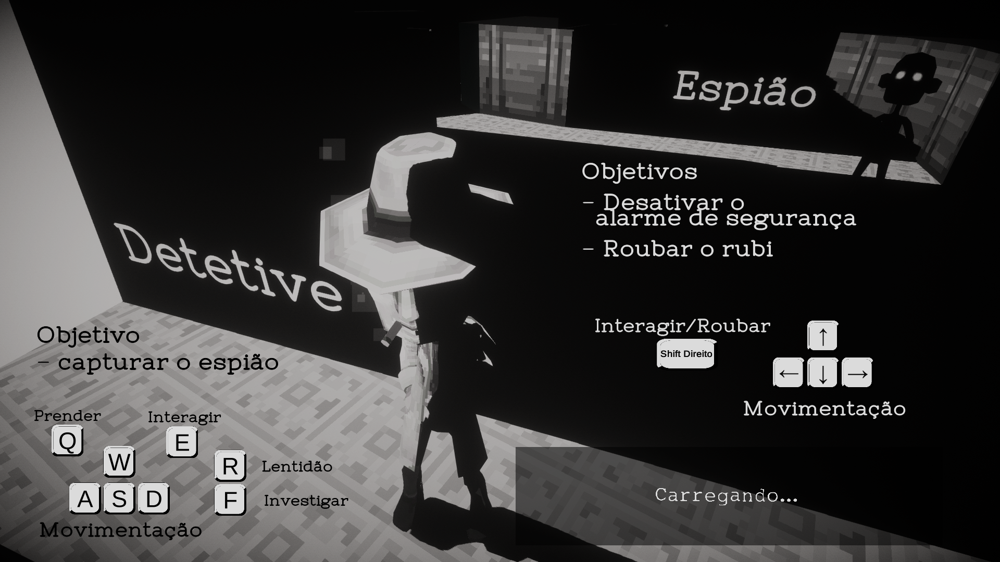

SLEIGHT - Nerve Wracking Espionage Party Game

SLEIGHT is a couch multiplayer party game within a detective noir setting, where one player tries to steal a precious red jewel, while the other has to stop that from happening. Using various tools in the level, as well as situational awareness and maybe a bit of trickery, the game happens as much on the screen as in between the players minds.

The prototype version was developed during the 2018 edition of Game Jam +, having been selected finalist by the jury. here you can see a trailer for that version:
I am the solo artist/tech artist in this game, from concepts to final asset implementation. The game follows a noir visual style for both flair and functionality, as the game relies on misdirection, so a grayscale image provides a better play experience.

Since the prototype jam version we got a grant from the local culture incentive fund (FIC) allowing the team to go through many iterations and improvements on the game, that now containins a single player mode and online multiplayer. Character models were redone to better suit a finished product as opposed to the jam version, and new level art is on its way to the game as well. here you can see the before and after of the detective model:

The game is currently under development for Switch, XBOX, PS4 and PC, and is slated to be released in 2020. The full release will have online play, as well as a single player campaign mode chronicling the rivalry between the detective and the jewel thief. A playable demo is currently available on Steam, containing the first multiplayer level in the game.
